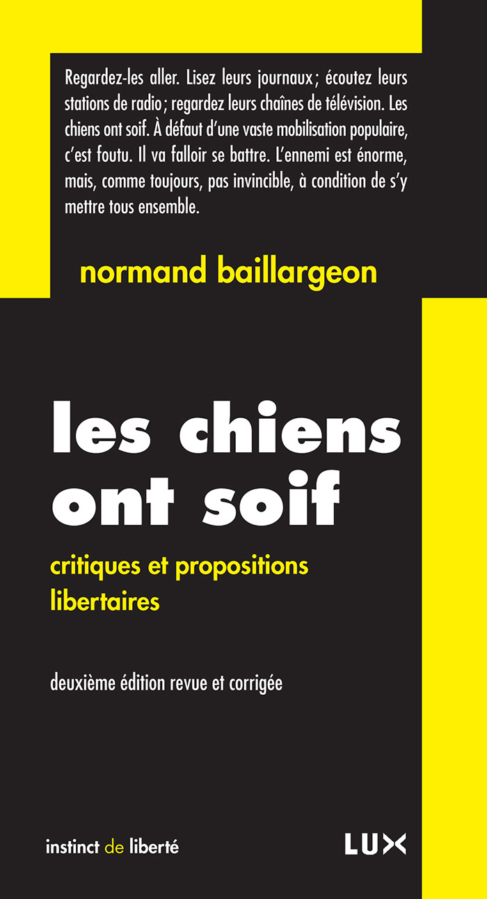
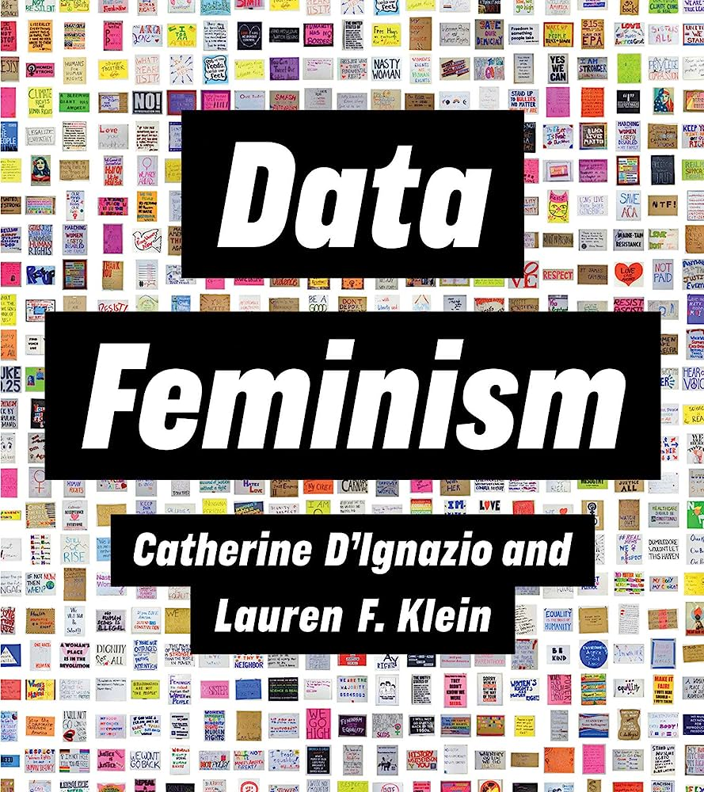
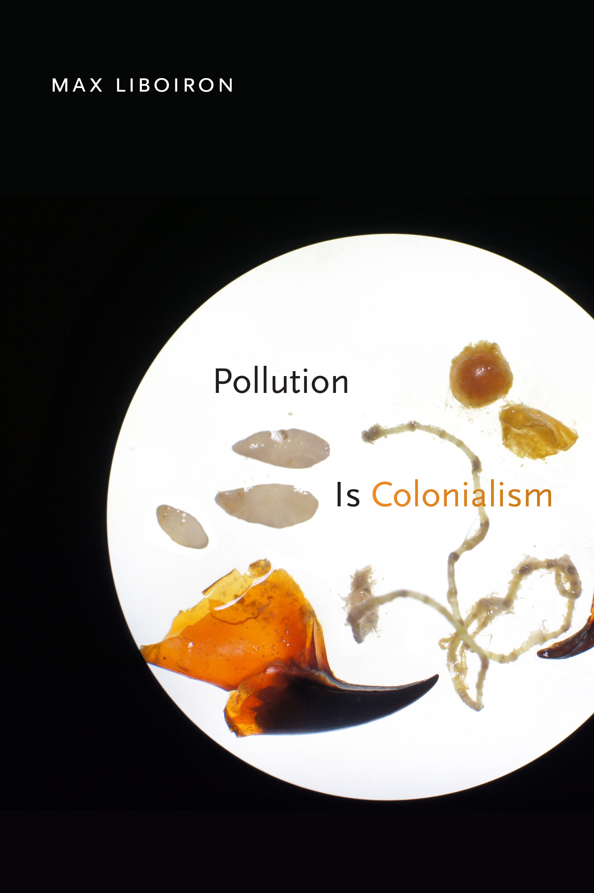
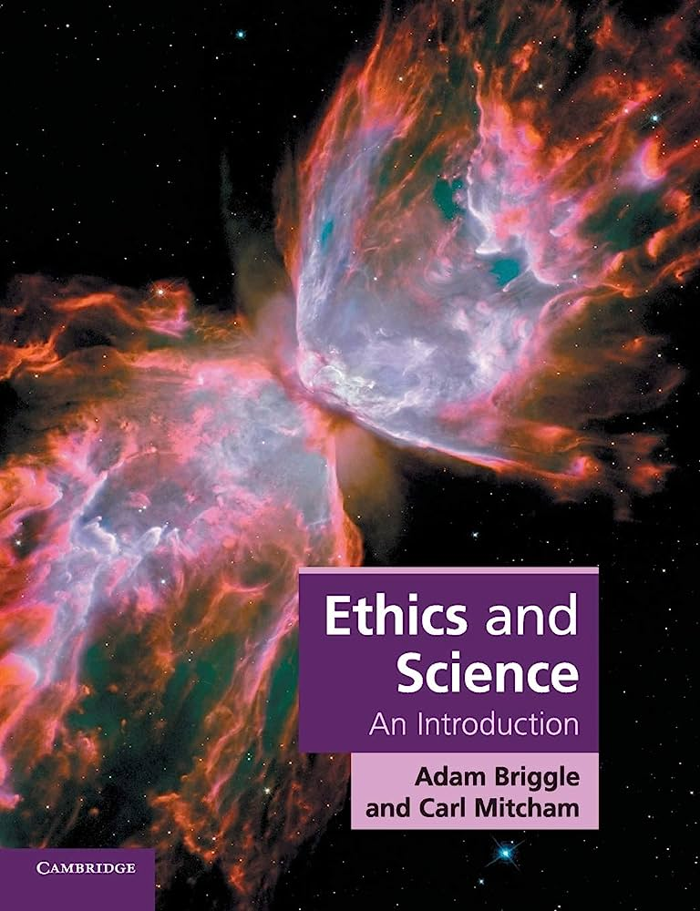

I joined a book club with other PhD students (now post-docs and professors) of my Biology Department. We meet on a monthly basis to discuss scientific and philosophical books relevant to our field of study. With this initiative, we hope to put the “Ph” back in our PhD by fostering philosophical thinking during our doctoral degree, which tends to encourage hyper-specialization at the expense of introspection and critical thinking. Thank you Andrew, Emmanuelle, Morgan, and Stéphanie for your profound reflections and excellent selection of food and drinks. Here are some of the books we’ve read.

Book 4: Les chiens ont soif by Normand Baillargeon. “De toutes les menaces qui pèsent sur la liberté, la plus grande est sans nul doute la perte de l’esprit critique. On en mesure chaque jour l’étendue dans les médias qui, ayant renoncé à cultiver l’opinion publique, préparent et adaptent les consciences aux « nouvelles réalités ». On l’observe également dans les écoles et les universités qui ont bradé leur indépendance, leur mission et leurs valeurs fondamentales, pour se mettre au pas des impératifs économiques. Face à une telle servilité intellectuelle, ce livre constitue une invitation à la trahison.”

Book 3: Data Feminism by Catherine D’Ignazio and Lauren F. Klein. “Today, data science is a form of power. It has been used to expose injustice, improve health outcomes, and topple governments. But it has also been used to discriminate, police, and surveil. In Data Feminism, Catherine D’Ignazio and Lauren Klein present a new way of thinking about data science and data ethics—one that is informed by intersectional feminist thought.”

Book 2: Pollution Is Colonialism by Max Liboiron. “In Pollution Is Colonialism, Max Liboiron presents a framework for understanding scientific research methods as practices that can align with or against colonialism. They point out that even when researchers are working toward benevolent goals, environmental science and activism are often premised on a colonial worldview and access to land. Focusing on plastic pollution, the book models an anticolonial scientific practice aligned with Indigenous, particularly Métis, concepts of land, ethics, and relations.”

Book 1: Ethics and Science: An Introduction by Adam Briggle and Carl Mitcham. “Who owns your genes? What does climate science imply for policy? Do corporations conduct honest research? Should we teach intelligent design? Humans are creating a new world through science. The kind of world we are creating will not simply be decided by expanding scientific knowledge, but will depend on views about good and bad, right and wrong.”